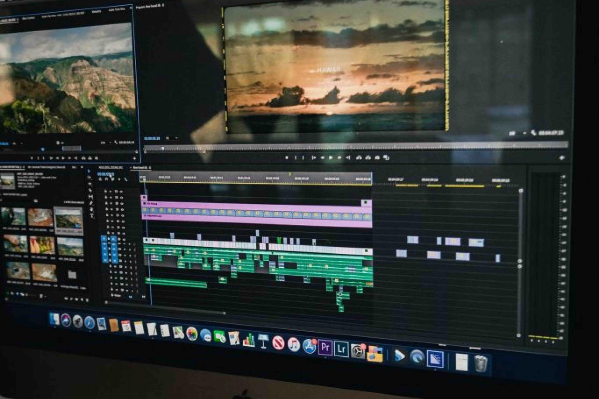

Be sure your school is making the right first impression with a video that captures its unique feel, personality, and ethos. Ideal for schools, colleges and universities looking to add a personal touch and connect with parents and prospective students in a clear and effective way.
Video is the perfect way to showcase your school's story through the people who know it best - your staff and your students. Visually showcasing your school through video allows prospective students and their families to immerse themselves in your environment, giving families the chance to see classrooms, libraries, and even meet some of the teachers and hear current student experiences.
In an age where audiences expect to find the information they need at the touch of a button - making school open days and personal introductions increasingly difficult - a professionally produced video creates a compelling reason for audiences to find out more.
Our business has been at the forefront of digital marketing since 2007, starting originally as a B2B video production company. We've grown and developed throughout the years to keep pace with the ever-changing world of digital marketing. Having produced videos for a range of industries and business sizes - including big brands such as Yorkshire Tea, Cadbury's, Sheffield United and the NHS - our team have helped a range of businesses develop a strong, professional image to help them thrive.
Over the last 5 years we have worked with a variety of schools, colleges and universities to produce a range of videos that showcase their facilities, increase admissions, and showcase their culture. It's become difficult for schools to convey their ethos and character when the opportunity to invite potential attendees onto site is limited - we've seen the schools we've worked with grow with great success thanks to our partnership with them.
A London-based primary school using unique teaching methods to help children excel.
Educating and encouraging young musicians. SMA were looking for a creative spin on their video.
Broadheath work in partnership with parents to nurture confident children into the challenges of tomorrow.
A clear, straightforward process built around your school day - so filming fits around your staff and students, not the other way round.
Start a ProjectFirstly, we get to know you and your school. We'll discuss video elements including interviews, locations, and unique features.
Next, we plan the day and create an itinerary - arrival time, filming location, and filming topics.
We start with interviews, which usually takes around 20 minutes. Once interviews are complete, we start capturing your school - usually 15–20 minutes per area.
Once filming is complete, it's time to edit and put together your final piece. We send you the video for approval, and once you're happy it's yours to download and share.

A focused, single-camera showcase film - ideal for a first look at what video can do for your school's admissions and open days.
A full-day, multi-location shoot with interviews from staff, students and parents - built to capture the full character of your school.
A complete video campaign - hero film plus a set of cutdowns tailored for social media, open days, and prospectus pages.
Tell us about your school and what you'd like to achieve - we'll come back with a clear approach and quote.